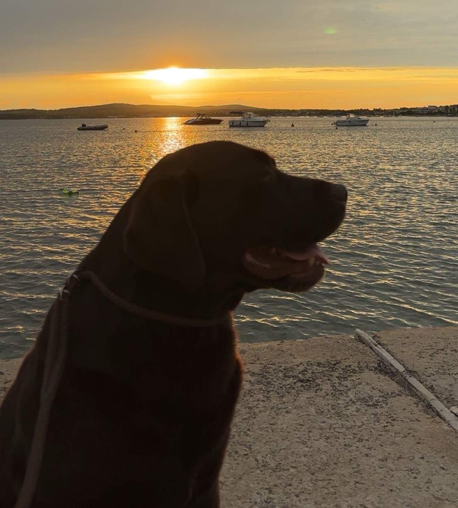

Sky bemutatása
- Sky már 6 éve boldogítja családunkat, nélküle a mindennapjaink elképzelhetetlenek.
- Nagyon életvidám kutyusról van szó, aki tele van energiával.
- Mozgásigénye nagy, családcentrikus kutya.
- Akár világutazó kutyának is nevezhetnénk, akárhova utazik a család, ő mindig jön velünk.
- Nagyon szeret más kutyák társaságában lenni, játszani, labdázni velük.
- pet_suppliesOtthon csomó plüsse van, amivel órákon át is eljátszik.
